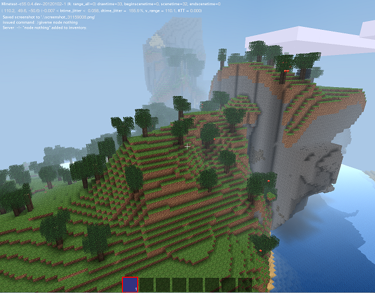

|
Minetest-c55: Beginners Guide to Modding in Lua |
|---|
|  |
Minetest-c55 is a Minecraft clone, developed by the Finnish programmer 'celeron55' and contributors. Minetest has been built with the intention of making it easy for anyone to program Mods (Modifications), extending its features and adding new items. In this tutorial we'll show you how to get started writing Mods for Minetest using Lua. Along the way you'll start learning how to write programs in Lua. If you already know a programming language like Java, Javascript, Python, etc., then you should find it reasonably easy to get started in Lua. If you are new to programming, don't worry. We'll go slowly and show you exactly what to do. If you would like to learn more about programming in Lua there are lots of places on the web that can help. We've put a list of suggested programming resources at the end of this tutorial. |
The computer program that runs Minetest is split into two main parts. First, there is the "Engine". This looks after drawing the world on the screen, keeping track of players and objects in the game, all the communications in a multiplayer game, etc. Second, there are the "Mods". Mods decide what things in the game look like and how they work. Mods deal with all the crafting. Mods define what happens when you hit things. Without the Mods the game would run, but it wouldn't be very interesting.
The people who wrote Minetest have made it really easy for you to change how the game works by writing your own Mods. This means that with a little bit of knowledge of how to write small bits of computer programs you can change Minetest to work in any way that you can imagine. Really. You want trees to fly? No problem. You want to have a working farm? Someone's already done that one. You want chests to send tweets to Twitter whenever someone takes something out of them? That one will take a little work.
To get ourselves started, let's write a simple Mod. What we'll do is change the game so that when you hit a brick block it complains at the injustice you have just caused it.
Follow these steps to get yourself started:
In order to write computer programs, you are going to need to use a text editor. If you already know what a text editor is, then you probably have a favourite one ready to go. If you don't know what a text editor is and you are using Windows, then Notepad++ is a good choice. You can download and install a copy from http://notepad-plus-plus.org/.
The next bit can be a bit fiddly. If you get stuck ask someone for some help. You need to find the folder where you installed Minetest. I unpacked my Minetest on my "C:\" folder on Windows. If I open the "Computer" folder in Windows and click on "Local Disk (C:)", I can find a folder called "minetest-0.4.6". This is the where I installed Minetest. Make sure you can find the folder where you installed Minetest as this is the place you need to go to write your Mods. If you are stuck, ask someone for help.
Now that you have found the folder where you installed Minetest, let's write our first Mod. This will be a simple, but polite, Mod that will say hello to us as we start the game. Inside the folder where you installed Minetest double click to open the folder called "mods". Double click again to open the folder called "minetest". We now need to make a new folder in this minetest directory for our new Mod. In Windows right-click the empty space in the folder and choose "New => Folder". Change the name of the folder to "chatty_bricks".
So far so good. We've created a folder to hold our new Mod. Now we actually need to write some code. Open up your text editor (Notepad++ or your favorite) and tell it to create a new blank text document. Type the following lines into the new text document:
print("++++++++ Hello from me +++++++++")
Now you need to save the document. Save it in the "chatty_bricks" folder that you just made. Call the document "init.lua". Be careful not to save it as "init.lua.txt" by mistake.
We have reached the moment of truth. Go and fire up Minetest. As you start the program you should see a console window pop up behind the main Minetest window. Move the windows around so that you can see the console window. Keep one eye on the console window as you double click to open a single player world. Did you see your hello line appear? If you did, perform a celebratory dance of your own choosing. If you didn't, ask the person sitting next to you to see if they can help you figure out what went wrong.
Challenge: Try changing your program to make it say something different. Be polite!!!
While I was impressed by that, I've a feeling your friends may be somewhat underwhelmed if you brought them round specially to show them your new Minetest Mod. Let's improve on it a bit. Open up your editor again and edit the init.lua file. After the print statement you created in the previous step, on a new line add the following:
minetest.after(5,
function(params)
minetest.chat_send_all("BEWARE THIS GAME HAS BEEN MOD'ED!")
end
)
Save your init.lua. Close your single player world in Minetest and then reopen it. Five seconds after you start the game you should get the message appear as a chat in the main game.
Challenge:The number 5 in the code tells Minetest how many seconds to wait before sending the message. Add some more "after" functions so that Minetest does a count-down from 10 to 1.
We're nearly there. The last thing for us to do is add some code to our Mod that makes bricks complain when you hit them. We've already seen the chat_send_all function that sends a message. What we need to use now is register_on_punchnode function to tell the game what to do when someone hits a brick.
Add this to your init.lua file:
minetest.register_on_punchnode(
function(pos, node, puncher)
if node.name == "default:brick" then
minetest.chat_send_all("Hey!! Stop it!! That hurts")
end
end
)
Challenge: Add some more code to do make a different type of block say something.
Challenge: Change the message so that the brick uses the name of the person who punched it.
Challenge (Tricky!): See if you can use the minetest.sound_play function to make the brick make a noise when you hit it.
This is page is adapted from Jeija's Modding tutorial by Dave Potts (davegoopot on GitHub).